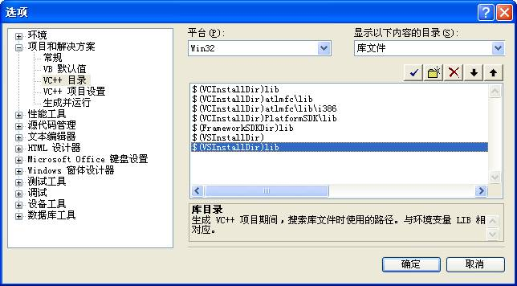

VC++配置环境变量
为什么需要使用环境变量配置？
在使用VC++开发软件的过程中，我们就经常需要使用到第三方的CPP Library、DirectX……，由于需要使用它们相应的*.lib以及*.h文件（*.dll），如果不懂得如何设置那些环境变量，在初期编程就会感觉到无从下手！
例如#include 指令有两种使用形式
#include <stdio.h> 文件名放在尖括号中 #include “mystuff.h” 文件名放在双引号中
尖括号< 和> 括起来表明这个文件是一个工程或标准头文件。查找过程会检查预定义的目录，我们可以通过设置搜索路径环境变量或命令行选项来修改这些目录。
首先，你需要了解一下，环境变量配置的种类区分有哪些？
1、 按编译器区分：区别于编译器的配置环境主要就是有VC6和VC8以及GNU C++等。在这里我们只说VC++系列。
2、 按编译器下各库的版本区分：区别于某个编译器下不同的DSDK版本等。
接下来，我们开始描述如下的三种常用编译环境：
1、CMD控制台
2、VC++6’s IDE
3、VC++8’s IDE
Let’s go!!!
CMD控制台
以下内容为VC6.bat。请用记事本编辑。将以下内容拷贝至记事本中，然后另存为“VC6.bat”：
@echo off
set DXSDK=C:\Program Files\Microsoft DirectX 9.0 SDK (April 2005)
set VSDIR=C:\Program Files\Microsoft Visual Studio
set VCDIR=%VSDIR%\VC98
set MFCDIR=%VCDIR%\mfc
set ATLDIR=%VCDIR%\atl
set VSCOMMDIR=%VSDIR%\Common
set include=%DXSDK%\Include;%VCDIR%\Include;%ATLDIR%\include;%MFCDIR%\include
set lib=%DXSDK%\Lib;%DXSDK%\Lib\x86;%VCDIR%\lib;%MFCDIR%\lib
set path=c:\;%VSCOMMDIR%\MSDev98\Bin;%DXSDK%\Developer Runtime\x86;%VCDIR%\Bin
set %DXSDK%=
set %VSDIR%=
set %VCDIR%=
set %MFCDIR%=
set %ATLDIR%=
set %VSCOMMDIR%=
echo on
VC6 IDE
Step 1：选择IDE菜单中的“Tools”/“Options”

Step 2：打开“Options”后，我们点击“Directies”页面，将出现如下界面。 我们将根据“Show Directies for:”的内容来决定来设定哪些环境变量：
“Show Directies for”的内容和环境变量对应关系表
VC6 IDE显示内容的目录 |
VC++环境变量 |
中文描述 |
Executable files |
PATH |
在编译期间，搜索可执行文件时使用的路径 |
Include files |
INCLUDE |
在编译期间，搜索#include<文件时使用的路径 |
Library files |
LIB |
在编译期间，搜索*.lib的路径 |
VC8 IDE
Step 1：选择IDE菜单中的“工具”/“选项”
Step 2：打开“选项”后，我们点击“项目和解决方案”，选择“VC++ 目录”，将出现如下界面，这个设置和VC6的大致差不多，只不过中文化后，连“显示内容的目录”的内容都成了中文版！-_-
“显示内容的目录”的内容和环境变量对应关系表
VC8 IDE显示内容的目录 |
VC++环境变量 |
中文描述 |
可执行文件 |
PATH |
在编译期间，搜索可执行文件时使用的路径 |
包含文件 |
INCLUDE |
在编译期间，搜索#include<文件时使用的路径 |
库文件 |
LIB |
在编译期间，搜索*.lib的路径 |
引用文件 |
LIBPATH |
在编译期间，搜索通过#using引入的文件时使用的路径 |
1、PATH
2、INCLUDE
3、LIB

4、LIBPATH